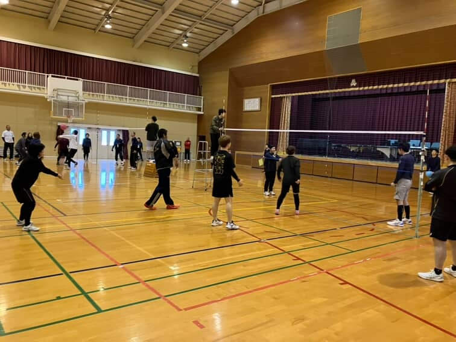
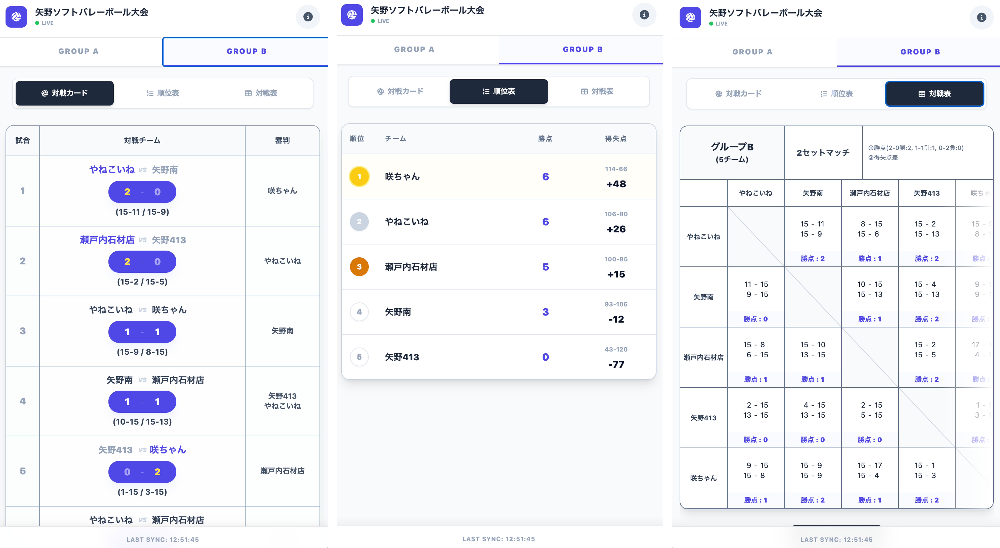
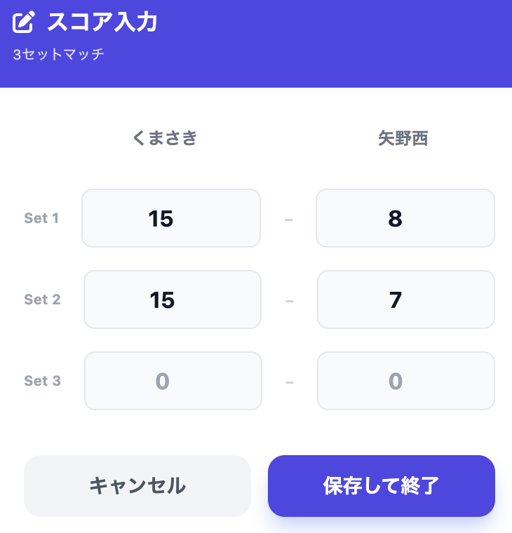
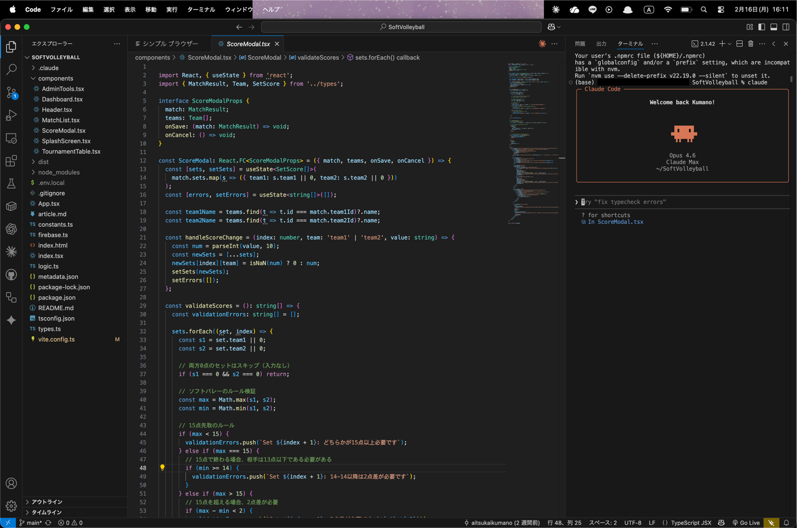
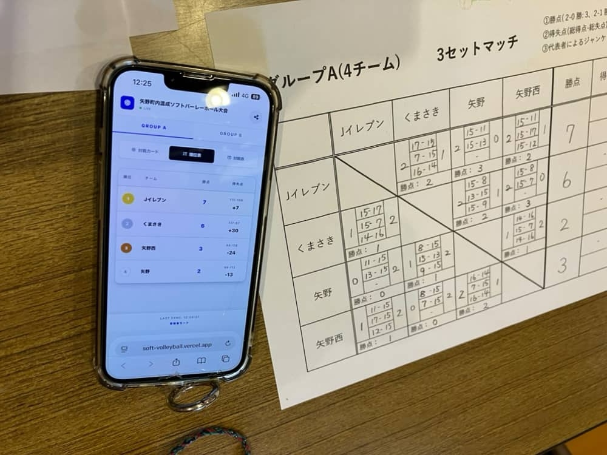

地域のソフトバレーボール大会のスコア管理をデジタル化するWebアプリを開発し、実際の大会で運用した事例。Firebase Realtime Databaseによるリアルタイム同期で、約60名の参加者全員がスマートフォンから試合結果を即座に確認できる環境を実現。Claude Code（AI開発支援ツール）を全面活用し、約10時間・27コミットで本番運用レベルのアプリケーションを構築した。
| 項目 | 内容 |
|---|---|
| プロダクト名 | ソフトバレー大会スコアアプリ |
| サイト | https://soft-volleyball.vercel.app |
| コンセプト | 「スマホで結果がすぐわかる大会」— 紙に頼らないスコア共有 |
| 開発者 | KUMANO AI STUDIO |
| 開発期間 | 約10時間 |
| 規模 | 27コミット、15コアファイル |
| 運用実績 | 2026年2月15日 矢野体育館ソフトバレーボール大会（約60名参加） |
| 運用コスト | ¥0（Firebase無料枠 + Vercel無料枠） |

| レイヤー | 技術 |
|---|---|
| フロントエンド | React 19 + TypeScript + Vite 6 + Tailwind CSS |
| バックエンド | Firebase Realtime Database（サーバーレス） |
| ホスティング | Vercel |
| アイコン | Font Awesome（CDN） |
| 画像生成 | html-to-image（対戦表のPNG保存） |
参加者（スマートフォン）
↓ QRコードでアクセス
フロントエンド（React SPA / Vercel）
↓ Firebase Realtime Database（onValueリスナー）
↕ リアルタイム同期
管理者（スマートフォン / ?role=admin）
↓ スコア入力・更新
Firebase Realtime Database
→ 全端末に即時反映onValueリスナーによるリアルタイム同期。管理者がスコアを入力すると、全参加者の画面に即時反映?role=admin）で管理者/一般を分離。管理者のみ書き込み可能、一般ユーザーは閲覧専用
| 機能 | 説明 |
|---|---|
| リアルタイムスコア同期 | Firebase Realtime Databaseで複数端末に即時反映 |
| 対戦カード表示 | グループ別の試合一覧（試合番号・チーム名・審判・セットスコア） |
| スコア入力モーダル | 管理者がセットごとのスコアを入力・更新 |
| 順位表（勝点自動計算） | グループA（3セットマッチ）とグループB（2セットマッチ）で異なる勝点ルールに対応 |
| 対戦表（総当たり表） | 全チーム間の対戦結果をマトリクス形式で表示 |
| 対戦表の画像保存 | html-to-imageで対戦表をPNG画像としてダウンロード |
| グループ切り替え | グループA（4チーム）とグループB（5チーム）をタブで切り替え |
| 管理者モード | URLパラメータで分離。スコア編集・データリセットが可能 |
| スマホ対応 | モバイルファーストのレスポンシブUI |

| 時期 | マイルストーン |
|---|---|
| 2026/2（大会数日前） | 開発着手。「対戦表を作らないといけない」という課題からスタート |
| — | MVP開発（対戦カード表示・スコア入力・順位計算） |
| — | Firebase Realtime Database移行・リアルタイム同期実装 |
| — | 対戦表画像保存・スプラッシュスクリーン等の追加機能 |
| 2026/2/15 | 矢野体育館ソフトバレーボール大会で本番運用（約60名） |
設計・実装・UIデザイン・バグ修正のほぼ全工程でClaude Codeを使用。特に効果が大きかった領域:
onValueリスナーによる複数端末の即時同期
| 指標 | 内容 |
|---|---|
| 開発時間 | 約10時間 |
| コミット数 | 27 |
| コアファイル数 | 15 |
| 1機能あたりの開発時間 | 約1時間（主要10機能） |

| 項目 | Before（従来） | After（アプリ導入） |
|---|---|---|
| 結果確認 | 掲示板まで見に行く必要あり | スマホでどこからでも即確認 |
| 対戦表作成 | 手作業で作成 | アプリが自動生成 |
| 順位計算 | 手動計算（ミスの可能性） | 勝点ルールに基づき自動計算 |
| 結果共有 | 大会終了後に口頭or紙 | 画像保存して即共有可能 |
onValueリスナーにより、サーバーを立てずにリアルタイム同期を実現できる| 項目 | コスト |
|---|---|
| 開発所要時間 | 約10時間 |
| Firebase | ¥0（無料枠） |
| Vercel | ¥0（無料枠） |
| ドメイン | なし（Vercelサブドメイン） |